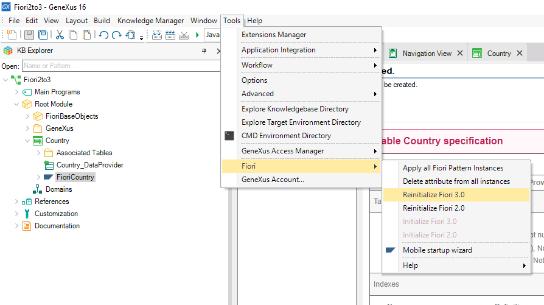
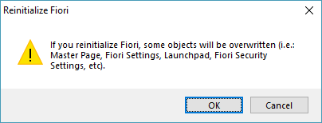
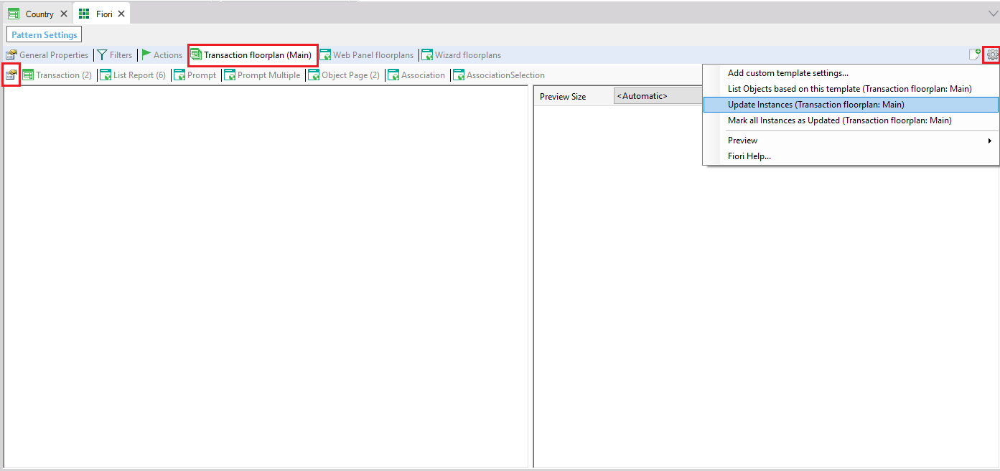
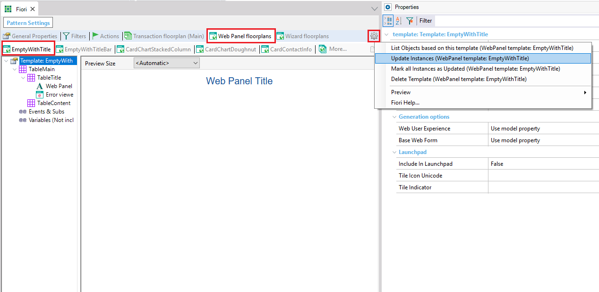

To change the Fiori pattern version of your Knowledge Base from 2.0 to 3.0, select in the GeneXus main menu: Tools > Fiori > Reinitialize Fiori 3.0  The following popup window will appear:  Click on the OK button. Then, GeneXus will start importing the new pattern version. This action will overwrite all the previous pattern objects with the new pattern ones. When this process finishes, go to Preferences > Patterns > Fiori for Web. Then, in the opened interface: 1) Click on the "Transaction floorplan (Main)" tab  After that, in the same opened interface: 1) Click on the "Web Panel floorplans" tab 
Note: The process to return from the 3.0 version to the 2.0 version, is completely analogous to the process to move from the 2.0 to the 3.0 version. That is, you have to select in the GeneXus main menu: Tools > Fiori > Reinitialize Fiori 2.0 and proceed in the analogous way that was explained.
AvailabilityThis feature is available since GeneXus 16 upgrade 7. |